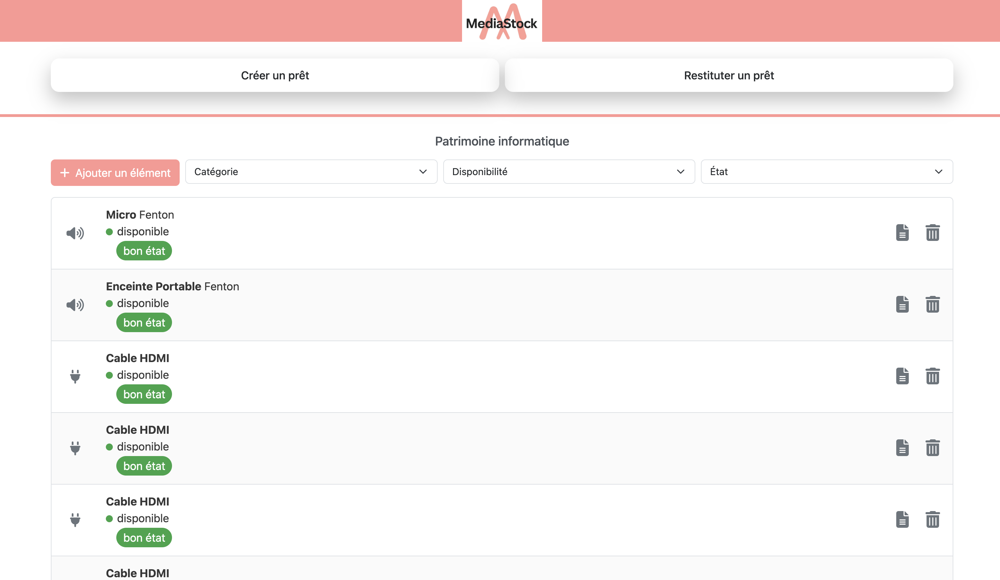
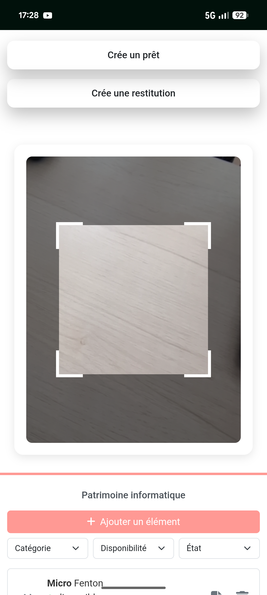
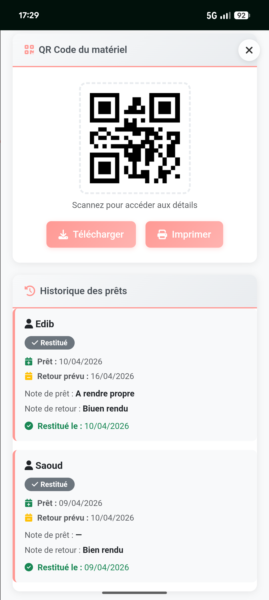
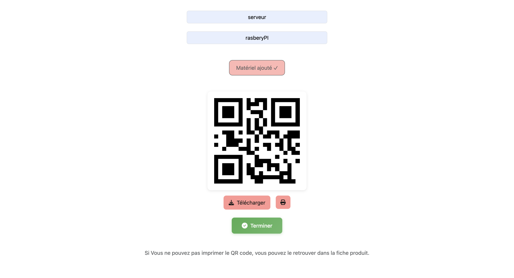

Media Stock
Application web mobile-first de gestion de matériel informatique et audiovisuel — QR codes, prêts, Docker — Projet BTS SIO SLAM

Captures d'écran
Défilement automatique · Desktop & Mobile · Naviguez avec les flèches
Vue d'ensemble
MediaStock est une application web mobile-first de gestion de matériel informatique et audiovisuel. Elle centralise l'inventaire, le suivi des prêts et retours, et permet l'identification unique de chaque équipement par QR code scannable directement depuis un smartphone.
Entièrement conteneurisée avec Docker Compose, l'application garantit un environnement reproductible. Développée en BTS SIO SLAM (session 2025) par Yanis ADIDI, avec contribution de Denys Lyulchak.
Inventaire QR
CRUD complet + QR code unique par équipement, imprimable et scannable en 1 clic.
Interface Mobile-First
Bootstrap 5 optimisé smartphone — enregistrement de prêt par scan caméra.
Docker Ready
3 services (Apache, MySQL 8, phpMyAdmin) — déploiement en une commande.
Fonctionnalités principales
L'application couvre l'ensemble du cycle de vie du matériel : de l'ajout à l'inventaire jusqu'à l'archivage logique, en passant par la gestion complète des prêts par scan QR.
- CRUD complet : ajout, modification, archivage du matériel
- Génération automatique et impression d'un QR code unique par matériel
- Enregistrement des prêts par scan QR depuis caméra smartphone
- Suivi des retours et clôture automatique des prêts
- Blocage automatique si le matériel est déjà emprunté
- Filtrage et recherche dynamique par catégorie, disponibilité et état
- Gestion des utilisateurs : rôles étudiant / intervenant
- Authentification administrateur avec expiration de session (5 min)
- Archivage logique — pas de suppression physique des données

Inventaire sur mobile — liste et disponibilitéScan QR & Gestion des prêts

Scan QR Code via caméra smartphoneGrâce à html5-qrcode.js, l'utilisateur scanne le QR code collé sur le matériel depuis n'importe quel smartphone sans installation. Le système identifie instantanément l'équipement et propose les actions disponibles.
- Scan direct via caméra — pas d'application tierce nécessaire
- Redirection automatique vers la fiche matériel correspondante
- Enregistrement du prêt en 2 touches : emprunteur + date de retour
- Vérification automatique de disponibilité avant validation
- Notification visuelle si matériel indisponible ou archivé
- Clôture de prêt par re-scan lors du retour
Architecture technique
Architecture MVC léger en PHP procédural avec Docker Compose.
Le frontend envoie ses requêtes via fetch() vers une API PHP.
Le dossier public/ est le DocumentRoot Apache, isolant le code métier.
- Variables d'environnement Docker pour la connexion PDO — aucune valeur en dur
- Modélisation Merise (MCD → MLD → MPD) — contraintes CASCADE complètes
- Session PHP sécurisée avec expiration automatique à 5 minutes d'inactivité
Environnement Docker
L'application est entièrement conteneurisée avec Docker Compose.
Trois services collaborent pour reproduire l'environnement de production
en une seule commande : docker compose up -d.
| Service | Image | Port |
|---|---|---|
| Application PHP | php:8.2-apache | 9080 |
| Base de données | mysql:8.0 | interne |
| Administration DB | phpmyadmin:latest | 8082 |

Interface de gestion des prêts actifsPoints clés
CRUD Inventaire
Ajout, édition, archivage logique. Aucune suppression physique — traçabilité totale.
QR Code unique
Généré à la création, imprimable sur étiquette. Scan caméra sans appli tierce.
Gestion des prêts
Blocage automatique si indisponible. Clôture par re-scan ou action manuelle.
Filtrage dynamique
Recherche en temps réel par catégorie, état et statut sans rechargement de page.
Rôles utilisateurs
Étudiant, intervenant, administrateur — accès distincts et session sécurisée 5 min.
Docker Compose
Environnement reproductible en une commande — PHP 8.2, MySQL 8, phpMyAdmin.
Technologies utilisées
| Composant | Technologie | Version |
|---|---|---|
| Backend | PHP procédural + PDO | 8.2 |
| Base de données | MySQL | 8.0 |
| Frontend | HTML5, CSS3, JavaScript ES6+ | — |
| Framework CSS | Bootstrap | 5.3.8 |
| Icônes | FontAwesome | 7.0.1 |
| QR Code | QRCode.js + html5-qrcode.js | — |
| Calendrier | Flatpickr | — |
| Infrastructure | Docker + Docker Compose | — |
| Versionning | Git | — |
Compétences mobilisées
- Concevoir une architecture MVC en PHP procédural avec séparation des responsabilités
- Implémenter une API PHP avec accès PDO sécurisé et variables d'environnement Docker
- Intégrer la génération et le scan de QR codes dans une interface mobile-first
- Mettre en œuvre Bootstrap 5 pour une expérience optimale sur tous les écrans
- Modéliser une base de données relationnelle avec la méthode Merise
- Conteneuriser une application web avec Docker Compose (PHP, MySQL, phpMyAdmin)
- Gérer les rôles et les sessions utilisateur côté serveur PHP
- Contribuer à un projet collaboratif géré avec Git et GitHub